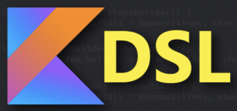

🏠
Kotlin DSL Basics

https://pambrose.github.io/myslides/dsl.html
🕯 Overview of Slides
What is a DSL?
Java Object Creation
Kotlin non-DSL Object Creation
Review Lambdas
Extension Functions
Person DSL
DSL Examples
Code Sources
🔦 What is a DSL?
Domain specific language (DSL) is a computer language that’s targeted to a particular kind of problem, rather than a general purpose language that’s aimed at any kind of software problem.
(source: Martin Fowler)
🕯 Where do we use DSLs
Configurations Files
Library Interface
Code-generated Load Scripts
Manual Load Scripts
Cleaning Up Other People's APIs
Java Object Creation
Java Person Object
Java Address Object
Java Object Creation
Kotlin non-DSL Object Creation
Kotlin Data Objects
Kotlin Approach (1)
Kotlin Approach (2)
Kotlin Approach (3)
Lambdas
Lambdas (1)
Lambdas (2)
Lambdas with Receivers
Lambdas with Receivers
Lambda Function Arguments
Lambda Function Arguments (1)
Lambda Function Arguments (2)
Extension Functions
Extension Functions (1)
Extension Functions (2)
Person DSL
Person DSL without Receiver
Person DSL with Receiver
Address DSL with Receiver
Final Person DSL
🕯 Kotlin DSL Examples
Gradle build.gradle.kts DSL
Kotlin HTML DSL
Kotlin CSS DSL
Ktor Embedded Server DSL
Ktor Routing DSL
ReadingBat DSL
KSlides DSL